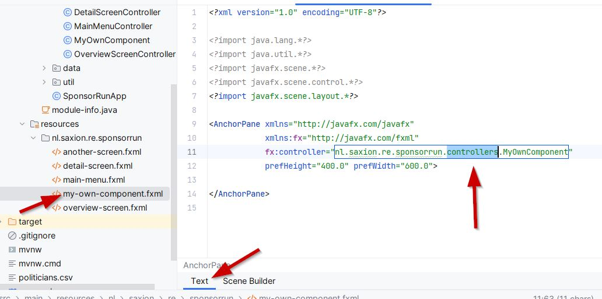
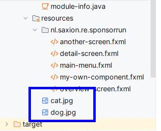

Download and extract the template project and open it in IntelliJ.
After some time, the project will be ready. You can test the application by starting it from the SponsorRunApp class.
The project looks like this:
The Controllers (1) are the code that make all screens work. The fxml files (2) are the Views and contain the user interface definitions (buttons, lists, etc). The two types of files belong together: you'll see a detail-screen.fxml, and also a DetailScreenController.
The application first loads data from disk on line 15. This is some sample data from a CSV with Dutch politicians and their political parties.
On line 18 (3) the "main-menu" view is opened. This will load the UI from main-menu.fxml and the code that defines the behavior of the component from the MainMenuController.
Let's add our own component. Right-click the package name in the resources directory and select New > FXML File.

Give it the name "my-own-component":

Now also create the Controller file. Right-click the package name in the java directory and select New > Java Class.

Give it the name MyOwnComponent.
(NOTE: If you gave your fxml file another name, then the controller should have the name that you can find in the fx:controller attribute in the fxml.)

We don't need the Controller for now, so head back to our fxml file: double-click the file my-own-component.fxml. When you open an fxml file, it opens either as XML or in the UI designer. We should first have the XML view, because we need to correct the controller name there. Click the "Text" tab if it is not visible, and add "controllers" to the namespace in the MyOwnComponent reference:

Now press the "Scene Builder" tab at the bottom to go to the UI designer.

Clicking the tab will open the Scene Builder.
NOTE: You may have to install two additional libraries when you try to use the scene builder for the first time. Click the message on top of the window (twice, for two libraries), and have some patience.

Now we will add two buttons and a canvas to our component (also see the video below):
0 (or 5 if you like some margin).Column Span to 2).Now we want our new screen to be shown at some point to test it. Let's hijack the sample application to show our own screen.
Open the SponsorRunApp class again and change the line where it opens main-menu.fxml to my-own-component.fxml.
Now instead of showing the menu, the application will now load our new component when the user clicks the button.
Start the application to test your sensational new screen.
We want our new screen to actually do something whenever the buttons are pressed. If the left button is pressed, we want to show a picture of a cat from 1947 and if the right button is pressed a dog from 1965. Because why not.
Save the images of a cat and a dog (click on the words to download the images) into the resources directory. Rename the files to cat.jpg and dog.jpg.

The functionality of a screen is programmed into the Controller class, in our case the MyOwnComponent class.
First, we need to make sure we can add an image to the Pane we added in the first row. For this, the Pane should have a name, so we can reference it from code. Open the my-own-component.fxml file in the Scene Builder, click on the Pane in the tree on the left, or on the Pane itself. On the right, in "Code" on the fx:id property, give the panel the id panePicture.

Open the MyOwnComponent class and add a new field of type Pane with the id you just added to the pane.
The Pane class should be imported from the javafx.scene.layout package. The field should be "annotated" with the @FXML annotation from the javafx.fxml package:
@FXML
private Pane panePicture;
Now also add a method we can call whenever the Previous button is pressed. This method should also be annotated in the same way:
@FXML
private void onPreviousButtonPressed() {
}
In the method we can add a picture to the Pane, like this:
// 1947 cat from the dutch national archive
String path = "/cat.jpg";
// remove previous pictures (if any)
panePicture.getChildren().clear();
// add the picture from the url
panePicture.getChildren().add(new ImageView(path));
The MyOwnComponent class should now look like this:

Now we should connect the Previous button to the method we just created. Open the Scene Builder again, select the button and in "Code", find the "On Action" property. In its dropdown you can select the method we created:

Run the application. When you now click the "Previous" button, the picture of the ancient cat appears:

You can now go ahead and implement the "Next" button yourself, to show the dog.
fxml and controller class.labelGreeting by setting the fx:idtextNametextName (HINT: use getText() on the textField) and display a greeting in the label. (HINT: use setText() on the label)Create a screen in which the user can enter a text. When a button is pressed, the application shows a random picture based on the text. You can use the Unsplash API for this by using this url: https://source.unsplash.com/random/300x200/?dog
Everything after the question mark is the search query. In this example it will show a random image of a dog. You can copy the code for showing the image of the cat, and use the unsplash url instead of the /cat.jpg path.
When you completed this tutorial, you know some of the very basics of JavaFX. But it's a large framework, capable of doing many nice things. There are lots of tutorials and references online, for example this playlist on YouTube.
This tutorial is CC BY-NC-SA licensed. This means that when sharing it: BY – credit must be given to the creator, NC – only noncommercial uses of the work are permitted and, SA – adaptations must be shared under the same terms.

Author: Jan Willem B @ Saxion University of Applied Sciences.
Dog and cat from Dutch National Archives.
Random image search by unsplash
Last updated: 2024-02-02.